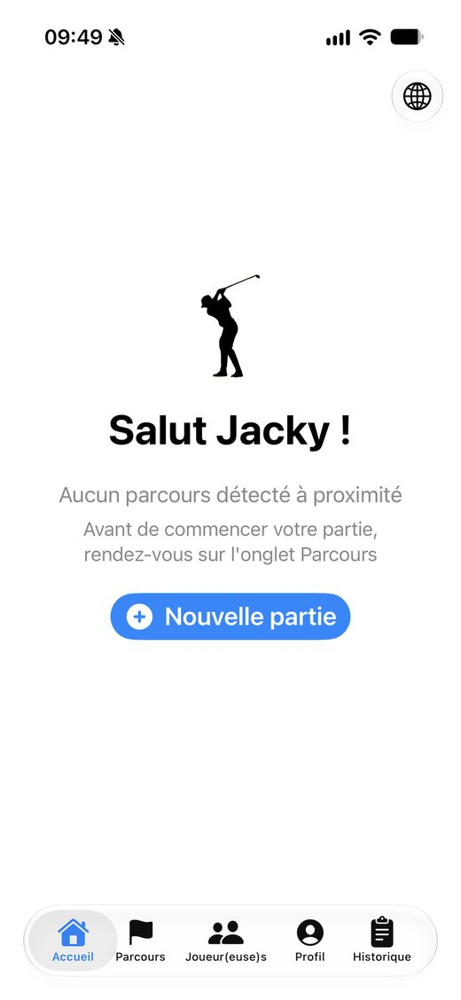
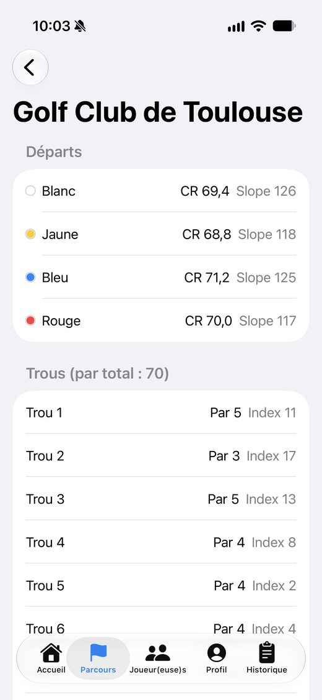
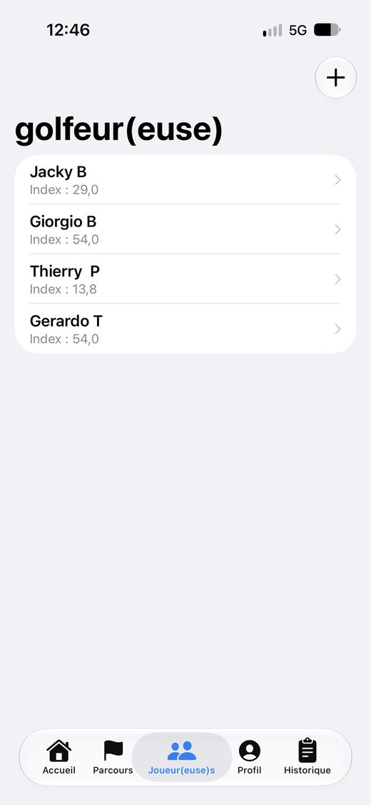
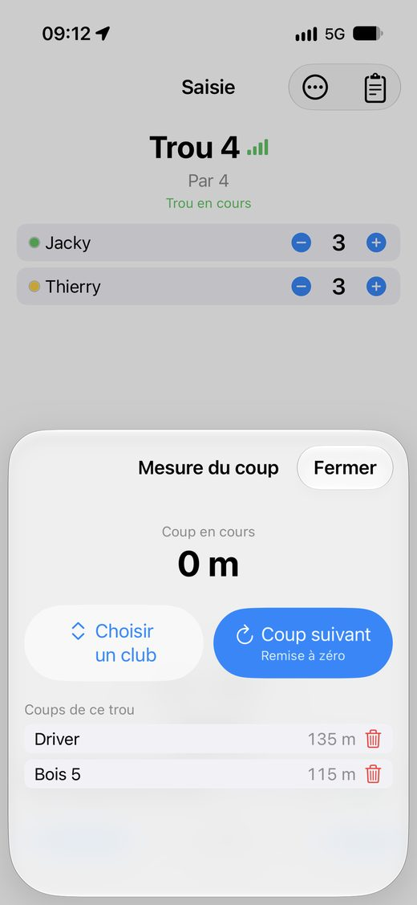
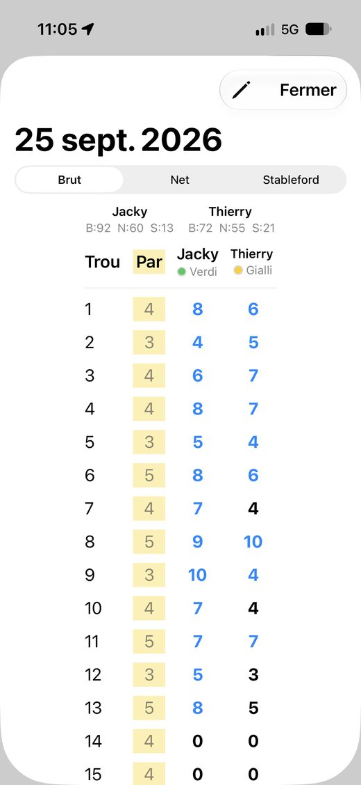
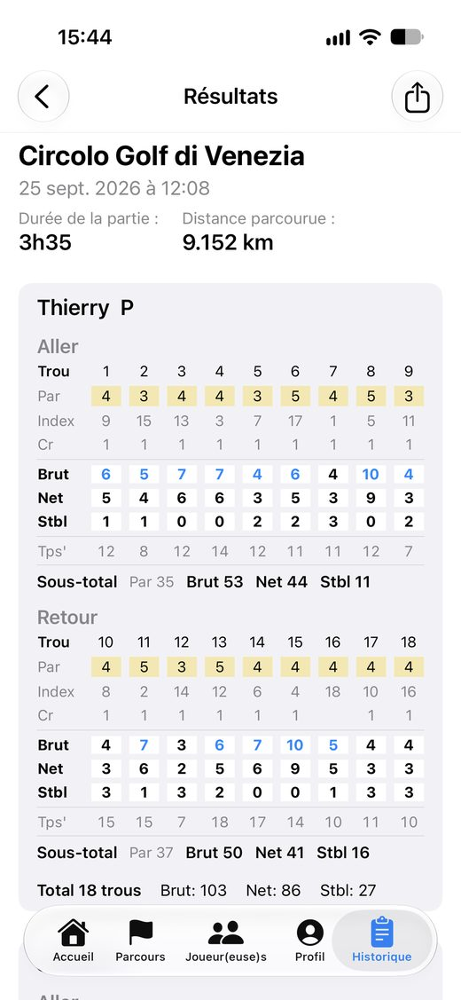
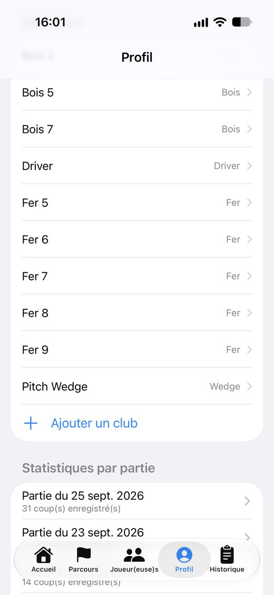
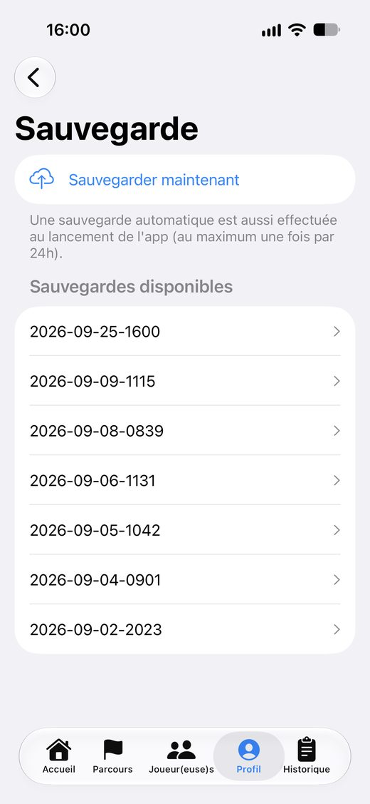

Score Golf, step by step.
Playing with friends and want some real stakes? Try Score Golf. Keep all your scorecards, follow your stats round after round and measure your progress over the period of your choice. Just like the pros!
⬇ Download this guide as a PDF
Getting started
When you open the app, the home screen greets you by name. If you are standing on a course that is already in the app, Score Golf suggests it automatically: just tap “New round”.
- Sign in with your Apple account, no password needed.
- No ads, no trackers: your location stays on your iPhone.

Choose or create a course
In the Course tab, you will find the list of golf courses added by players. Tap a course to see its tees (colour, CR, Slope) and its holes (par, index).
- Your course is not in the list? Tap the + button to create it in a few minutes: every player will benefit from it.
- To create it, have the tee table (White, Yellow, etc.) with CR and Slope, and the course scorecard at hand.
- CR and Slope: enter those of the 18-hole course. 9-hole course: choose “9 holes”, enter each hole's official index (1 to 9) and 2 × the 9-hole CR (Slope unchanged). The 2nd loop (holes 10 to 18) is created automatically: you can play 9 or 18 holes (2 loops).
- A tee is missing? Add it yourself without recreating the course. Spotted a mistake? Tap “Report this course”.

Add your playing partners
In the Players tab, add each golfer with their name and handicap index. You only do this once: they will be offered for every new round.
- Remember to add your partners before starting the round.
- The index is used to compute everyone's Course Handicap, net score and Stableford.
Start a round
Tap New round, then select the course, the players and each player's tee (white, yellow, red…).
- Starting on hole 10 because the course is busy? Choose it as the starting hole: the following holes continue in order.
- The marker is whoever carries the phone: only their phone records GPS distance and time.
- Golf cart: tick “Using a golf cart” if you are not walking. The distance walked is then neither measured nor shown (results: “Not measured”), but each shot is still measured as the crow flies. Leave it unticked to get your total walking distance.

Enter the round, hole by hole
On the Scoring screen, enter each player's score with the + and − buttons. Few taps, screens readable in sunlight, one hand is enough.
- Tee off: starts the measurement once the GPS signal has stabilised.
- Choose a club, then tap Next shot: the shot distance is measured by GPS and linked to the club.
- One more putt? The putt counter feeds your statistics.
- Phone on a cart? Tap “Phone on the cart”: distance is still measured by GPS, without the pedometer check. In a golf cart, the distance walked is not measured (see “Start a round”).

The scorecard
The scorecard can be viewed as Gross, Net and Stableford, with each player's hole-by-hole detail.
- Tap Finish the round to close it, even if not every hole was played.
- The detailed card can be shared or printed as a PDF, for example to show it to your partners.

Round results
At the end, the summary shows the round's duration, the distance walked, and each player's front and back nine scores (gross, net, Stableford).

Your stats, just like the pros
In Profile, follow your statistics round after round, or cumulated over the period of your choice with “Statistics by period”.
- Gross and net Stroke AVG, Driving, Driving Accuracy, GIR, Putts AVG, Putts per GIR, Scrambles.
- Average distance of every club in your bag.
- Surprise your golf pro: show them your stats. Their advice and lessons will target your weak spots.
- A “-” means the statistic cannot be calculated yet (for example, no putts entered).
Understanding your statistics
Each statistic is calculated over the rounds of the period you choose. A “-” means it cannot be calculated yet. Only complete rounds (every hole entered) are counted; choose “9 holes” or “18 holes” to avoid mixing the two formats.
- Stroke AVG (gross): average score per round, as a total number of strokes. Each round counts once: filter on 9 or 18 holes to compare rounds of the same length.
- Stroke AVG Net: the same average, after deducting the strokes your handicap gives you on each hole. It lets you compare rounds played on different courses or tees.
- Driving (m or yds): average distance of your tee shots, measured by GPS.
- Driving Accuracy (%): share of tee shots that finish on the fairway. Par 3s are excluded. Remember to tick “Fairway hit” when scoring: an unticked tee shot counts as missed.
- GIR (%) – Green in Regulation: share of holes where the ball is on the green in two strokes fewer than par (1 stroke on a par 3, 2 on a par 4, 3 on a par 5). In Score Golf your handicap is taken into account: the strokes you receive on the hole are added. It is therefore a “net” statistic.
- Putts AVG: average number of putts per hole (not per round), over the holes where you entered your putts.
- Putts per GIR: average number of putts on holes where the green is reached in regulation. Around 2 is normal; lower means you putt very well. It is based on net GIR.
- Scrambles (%): share of holes where the green is missed in regulation but you still save par (chip, bunker, approach from the rough). It is calculated net: par is compared with your score after strokes received.
- In short: Driving, Driving Accuracy and Putts AVG do not depend on handicap; Stroke AVG Net, GIR, Putts per GIR and Scrambles do.

History and backup
The History tab keeps all your rounds and their scorecards. You can look them up at any time, even after the 2 trial rounds.
- In Profile > Backup, an automatic backup is made when the app opens (at most once every 24 hours). You can also back up on demand.
Pricing
No subscription. Your first 2 rounds are free so you can try every feature. To carry on, a one-time purchase of €4.99 (France price) unlocks the app for good: unlimited rounds, no ads.
Your account and your data
You can sign out or delete your account at any time from the Profile tab, Account section. To learn more, read the privacy policy.
- A question or a suggestion? Write to scoregolf@jb-app.fr.